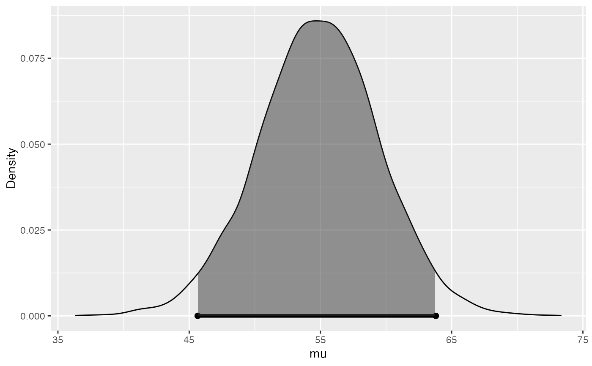
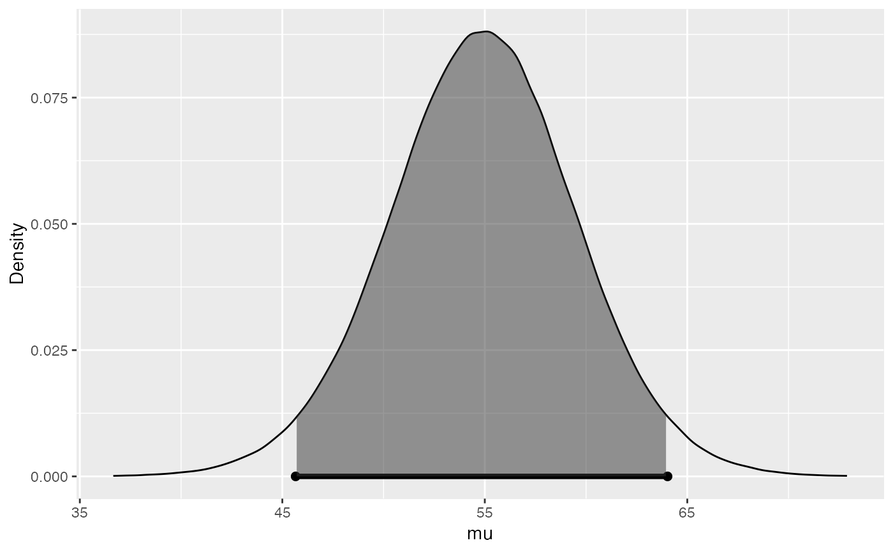
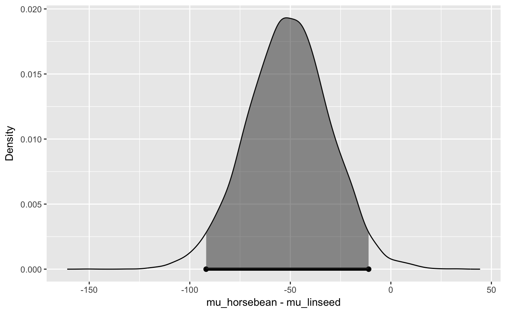

Bayesian hypothesis tests and credible intervals
bayes_inference(y, x = NULL, data, type = c("ci", "ht"), statistic = c("mean", "proportion"), method = c("theoretical", "simulation"), success = NULL, null = NULL, cred_level = 0.95, alternative = c("twosided", "less", "greater"), hypothesis_prior = c(H1 = 0.5, H2 = 0.5), prior_family = "JZS", n_0 = 1, mu_0 = null, s_0 = 0, v_0 = -1, rscale = 1, beta_prior = NULL, beta_prior1 = NULL, beta_prior2 = NULL, nsim = 10000, verbose = TRUE, show_summ = verbose, show_res = verbose, show_plot = verbose)
| y | Response variable, can be numerical or categorical |
|---|---|
| x | Explanatory variable, categorical (optional) |
| data | Name of data frame that y and x are in |
| type | of inference; "ci" (credible interval) or "ht" (hypothesis test) |
| statistic | population parameter to estimate: mean or proportion |
| method | of inference; "theoretical" (quantile based) or "simulation" |
| success | which level of the categorical variable to call "success", i.e. do inference on |
| null | null value for the hypothesis test |
| cred_level | confidence level, value between 0 and 1 |
| alternative | direction of the alternative hypothesis; "less","greater", or "twosided" |
| hypothesis_prior | discrete prior for H1 and H2, default is the uniform prior: c(H1=0.5,H2=0.5) |
| prior_family | character string representing default priors for inference or testing ("JSZ", "JUI","ref"). See notes for details. |
| n_0 | n_0 is the prior sample size in the Normal prior for the mean |
| mu_0 | the prior mean in one sample mean problems or the prior difference in two sample problems. For hypothesis testing, this is all the null value if null is not supplied. |
| s_0 | the prior standard deviation of the data for the conjugate Gamma prior on 1/sigma^2 |
| v_0 | prior degrees of freedom for conjugate Gamma prior on 1/sigma^2 |
| rscale | is the scaling parameter in the Cauchy prior: 1/n_0 ~ Gamma(1/2, rscale^2/2) leads to mu_0 having a Cauchy(0, rscale^2*sigma^2) prior distribution for prior_family="JZS". |
| beta_prior, beta_prior1, beta_prior2 | beta priors for p (or p_1 and p_2) for one or two proportion inference |
| nsim | number of Monte Carlo draws; default is 10,000 |
| verbose | whether output should be verbose or not, default is TRUE |
| show_summ | print summary stats, set to verbose by default |
| show_res | print results, set to verbose by default |
| show_plot | print inference plot, set to verbose by default |
Results of inference task performed.
For inference and testing for normal means several default options are avialable. "JZS" corresponds to using the Jeffreys reference prior on sigma^2, p(sigma^2) = 1/sigma^2, and the Zellner-Siow Cauchy prior on the standardized effect size mu/sigma or ( mu_1 - mu_2)/sigma with a location of mu_0 and scale rscale. The "JUI" option also uses the Jeffreys reference prior on sigma^2, but the Unit Information prior on the standardized effect, N(mu_0, 1). The option "ref" uses the improper unifrom prior on the standardized effect and the Jeffereys reference prior on sigma^2. The latter cannot be used for hypothesis testing due to the ill-determination of Bayes factors. Finally "NG" corresponds to the conjugate Normal-Gamma prior.
https://statswithr.github.io/book/
# inference for the mean from a single normal population # Jeffreys Reference prior, p(mu, sigma^2) = 1/sigma^2 library(BayesFactor) data(tapwater) # Calculate 95% CI using quantiles from Student t derived from ref prior bayes_inference(tthm, data=tapwater, statistic="mean", type="ci", prior_family="ref", method="theoretical")#> Single numerical variable #> n = 28, y-bar = 55.5239, s = 23.254 #> (Assuming improper prior: P(mu) = 1) #> (Assuming improper prior: P(1/sigma^2) = (sigma^2)^-1 #> #> Joint Posterior Distribution for mu and 1/sigma^2: #> N(55.5239, sigma^2/28) G(27/2, 19.3124*27/2) #> #> Marginal Posterior for mu: #> Student t with posterior mean = 55.5239, posterior scale = 4.3946 on 27 df #> #> 95% CI: (46.507 , 64.5409)# Calculate 95% CI using simulation from Student t using an informative mean and ref # prior for sigma^2 bayes_inference(tthm, data=tapwater, statistic="mean", mu_0=9.8, type="ci", prior_family="JUI", method="theo")#> Single numerical variable #> n = 28, y-bar = 55.5239, s = 23.254 #> (Assuming proper prior: mu | sigma^2 ~ N(9.8, *sigma^2/1) #> (Assuming improper prior: P(1/sigma^2) = (sigma^2)^-1 #> #> Joint Posterior Distribution for mu and 1/sigma^2: #> N(53.9472, sigma^2/29) G(27/2, 21.2245*27/2) #> #> Marginal Posterior for mu: #> Student t with posterior mean = 53.9472, posterior scale = 4.607 on 27 df #> #> 95% CI: (44.4944 , 63.4)# Calculate 95% CI using simulation with the # Cauchy prior on mu and reference prior on sigma^2 bayes_inference(tthm, data=tapwater, statistic="mean", mu_0 = 9.8, rscale=sqrt(2)/2, type="ci", prior_family="JZS", method="simulation")#> Single numerical variable #> n = 28, y-bar = 55.5239, s = 23.254 #> (Assuming Zellner-Siow Cauchy prior: mu | sigma^2 ~ C(9.8, 0.7071*sigma) #> (Assuming improper Jeffreys prior: p(sigma^2) = 1/sigma^2 #> #> Posterior Summaries #> 2.5% 25% 50% 75% 97.5% #> mu 45.6474155 51.834212 54.877835 57.93561 63.79327 #> sigma 18.6871687 21.900700 23.952390 26.41319 32.26566 #> n_0 0.2575021 2.864806 6.738517 13.85686 41.44594 #> #> 95% CI for mu: (45.6474, 63.7933)# Bayesian t-test mu = 0 with ZJS prior bayes_inference(tthm, data=tapwater, statistic="mean", type="ht", alternative="twosided", null=80, prior_family="JZS", method="sim")#> Single numerical variable #> n = 28, y-bar = 55.5239, s = 23.254 #> (Using Zellner-Siow Cauchy prior: mu ~ C(80, 1*sigma) #> (Using Jeffreys prior: p(sigma^2) = 1/sigma^2 #> #> Hypotheses: #> H1: mu = 80 versus H2: mu != 80 #> Priors: #> P(H1) = 0.5 , P(H2) = 0.5 #> Results: #> BF[H2:H1] = 3258.855 #> P(H1|data) = 3e-04 P(H2|data) = 0.9997 #> #> Posterior summaries for mu under H2: #> Single numerical variable #> n = 28, y-bar = 55.5239, s = 23.254 #> (Assuming Zellner-Siow Cauchy prior: mu | sigma^2 ~ C(80, 1*sigma) #> (Assuming improper Jeffreys prior: p(sigma^2) = 1/sigma^2 #> #> Posterior Summaries #> 2.5% 25% 50% 75% 97.5% #> mu 45.6578858 51.840349 54.907170 57.94701 64.02633 #> sigma 18.5889570 21.791739 23.865324 26.27004 32.13835 #> n_0 0.2187455 2.518125 6.144387 12.62916 36.68739 #> #> 95% CI for mu: (45.6579, 64.0263)# Bayesian t-test for two means data(chickwts) chickwts = chickwts[chickwts$feed %in% c("horsebean","linseed"),] # Drop unused factor levels chickwts$feed = factor(chickwts$feed) bayes_inference(y=weight, x=feed, data=chickwts, statistic="mean", mu_0 = 0, alt="twosided", type="ht", prior_family="JZS", method="simulation")#> Response variable: numerical, Explanatory variable: categorical (2 levels) #> n_horsebean = 10, y_bar_horsebean = 160.2, s_horsebean = 38.6258 #> n_linseed = 12, y_bar_linseed = 218.75, s_linseed = 52.2357 #> (Assuming Zellner-Siow Cauchy prior on the difference of means. ) #> (Assuming independent Jeffreys prior on the overall mean and variance. ) #> Hypotheses: #> H1: mu_horsebean = mu_linseed #> H2: mu_horsebean != mu_linseed #> #> Priors: P(H1) = 0.5 P(H2) = 0.5 #> #> Results: #> BF[H2:H1] = 6.1932 #> P(H1|data) = 0.139 #> P(H2|data) = 0.861 #> #> Posterior summaries for under H2: #> Response variable: numerical, Explanatory variable: categorical (2 levels) #> n_horsebean = 10, y_bar_horsebean = 160.2, s_horsebean = 38.6258 #> n_linseed = 12, y_bar_linseed = 218.75, s_linseed = 52.2357 #> (Assuming Zellner-Siow Cauchy prior for difference in means) #> (Assuming independent Jeffrey's priors for overall mean and variance) #> #> #> Posterior Summaries #> 2.5% 25% 50% 75% #> overall mean 168.8933510 182.885462 189.745741 196.660522 #> mu_horsebean - mu_linseed -91.8731181 -64.511203 -50.848104 -37.216722 #> sigma^2 1285.7510402 1831.129230 2257.254913 2820.563688 #> effect size -2.0104264 -1.393083 -1.072684 -0.761675 #> n_0 0.5310425 5.302766 13.509756 28.575491 #> 97.5% #> overall mean 210.8103350 #> mu_horsebean - mu_linseed -11.0475801 #> sigma^2 4498.3773126 #> effect size -0.2113328 #> n_0 89.1522527 #> 95% Cred. Int.: (-91.8731 , -11.0476) #>